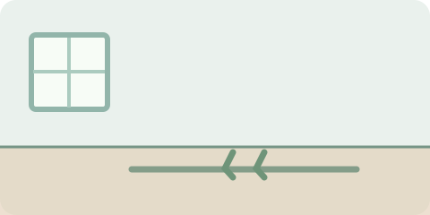
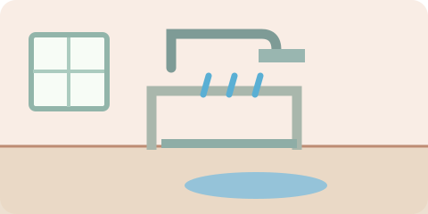
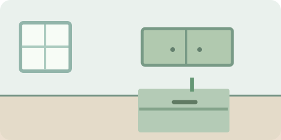
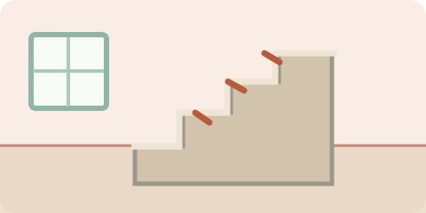
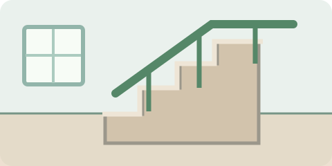
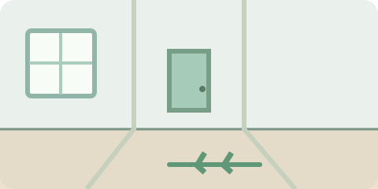

Tapetes
Atenção ao risco
Tapete solto ou com pontas levantadas.
Mais seguro

Deixe o caminho livre; retire tapetes soltos ou fixe-os de modo seguro.
Quedas não precisam fazer parte do envelhecimento. Pequenos cuidados podem ajudar você a preservar sua independência.
Veja situações comuns e o que fazer para diminuir o risco de cair.
Tapete solto ou com pontas levantadas.

Deixe o caminho livre; retire tapetes soltos ou fixe-os de modo seguro.

Piso molhado e falta de apoio.

Use superfícies antiderrapantes e barras de apoio instaladas corretamente.

Levantar e caminhar no escuro.

Use iluminação noturna até o banheiro.

Subir em cadeira para alcançar armários.

Guarde objetos de uso frequente em locais ao alcance.

Degraus escuros ou com obstáculos.

Mantenha corrimãos firmes, boa iluminação e degraus livres.

Fios e objetos espalhados pelo caminho.

Deixe as passagens desobstruídas e bem iluminadas.
Relate dificuldades para enxergar e ouvir; mantenha acompanhamentos quando indicados.
Prefira calçados bem ajustados, com solado que não escorregue.
Alguns podem causar tontura. Converse com a equipe de saúde, sem suspender por conta própria.
Atividades adaptadas ajudam a manter mobilidade e estabilidade.
Marque o que já está em ordem. A lista funciona no navegador, sem cadastro.
Comece marcando os cuidados que já existem na sua casa.
Este checklist não substitui avaliação individual do risco de queda.
Mesmo sem machucados aparentes, fale sobre a queda na próxima avaliação de saúde. A equipe pode ajudar a investigar as causas e prevenir novos episódios.
Se houver dor forte, suspeita de fratura, batida importante na cabeça ou dificuldade para se levantar, não force os movimentos e peça ajuda.
Se houver perda de consciência, suspeita de lesão grave ou incapacidade de se levantar, busque atendimento de emergência.
SAMU: 192